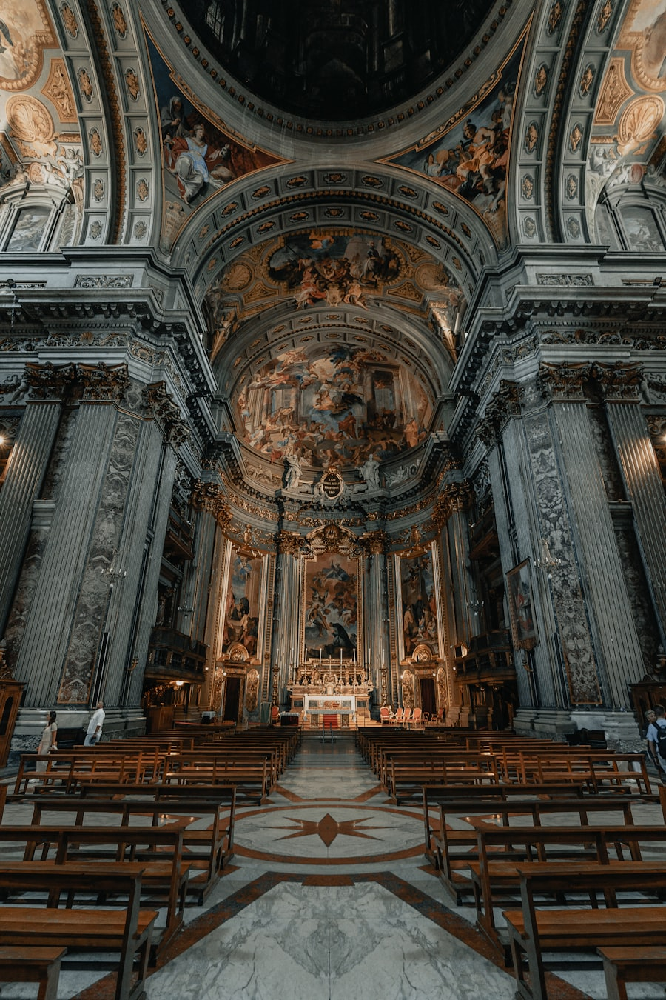
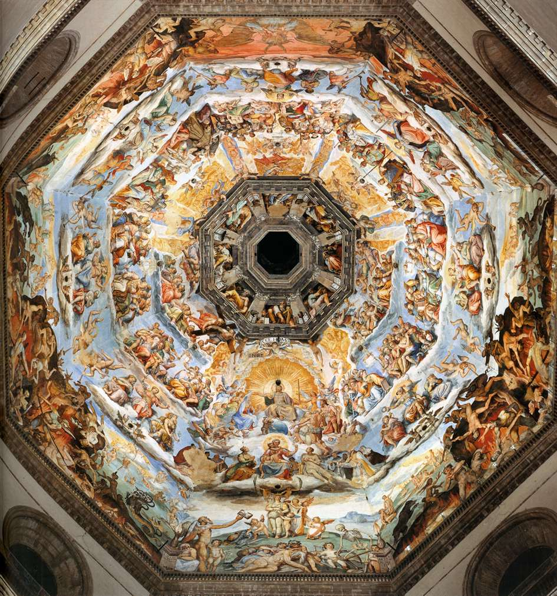
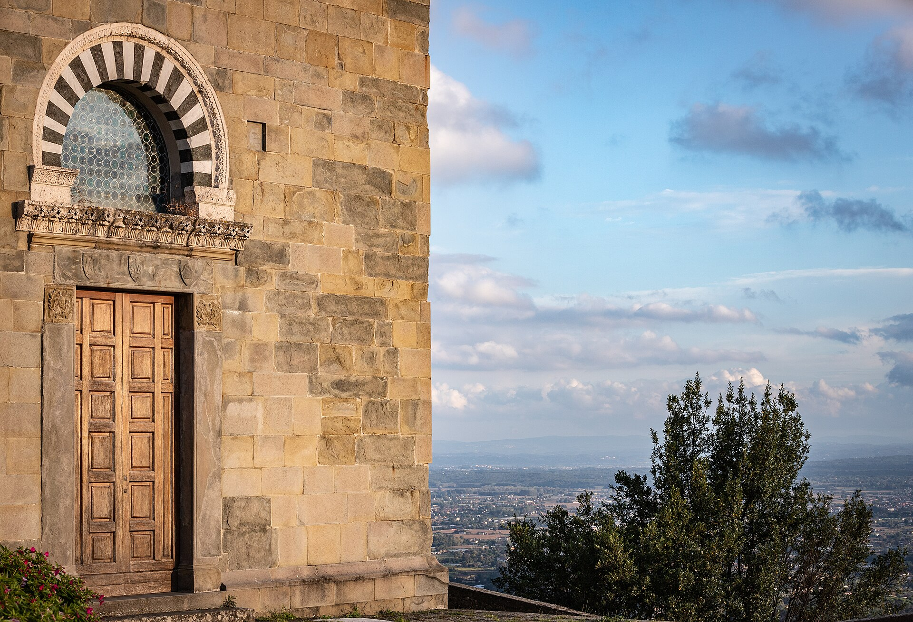
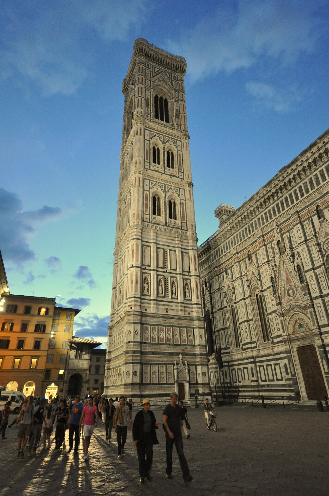
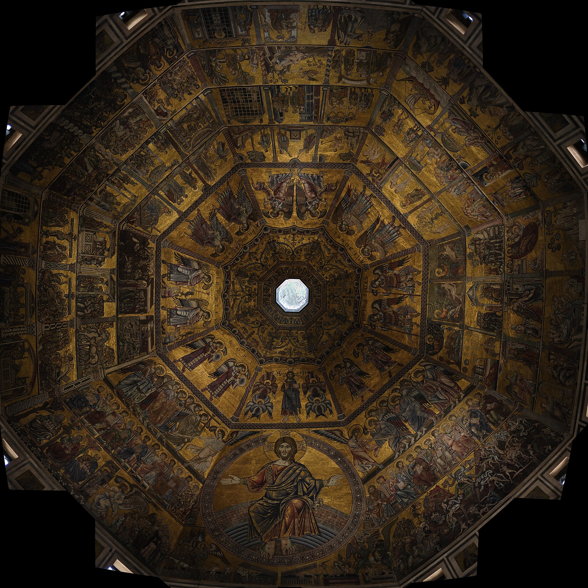
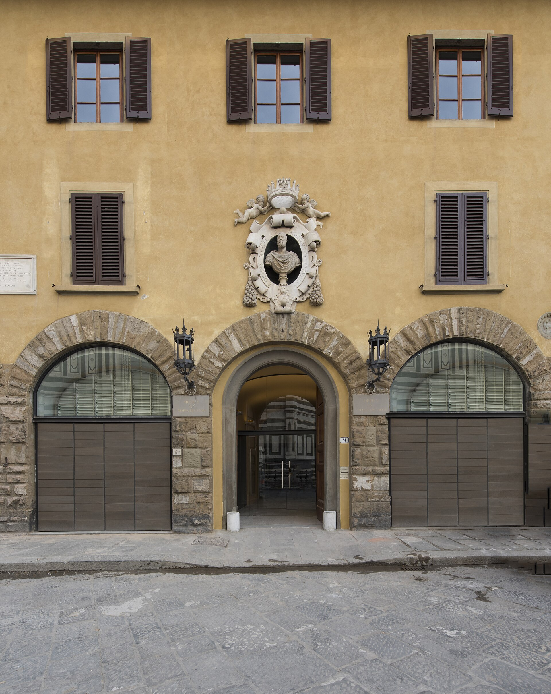

教堂本体（免费）+ 布鲁内莱斯基穹顶（登顶）+ 乔托钟楼 + 圣乔万尼洗礼堂 + 大教堂博物馆五件套。1436 年封顶的红色穹顶跨度 45 米、高 114 米，在不用一根中心支撑的情况下砌成--它宣告了一个新时代：人可以靠理性测量世界。
看点路线
Il Percorso
- 1先看免费的教堂内部：瓦萨里《末日审判》穹顶壁画 + 大理石地面
- 2登穹顶（预约时段）：夹层里看布鲁内莱斯基的人字形砌砖，出来看全城
- 3洗礼堂东门《天堂之门》（复制品，原件在博物馆）
- 4大教堂博物馆：多纳泰罗《抹大拉》与《天堂之门》原件
建筑看点
Il Complesso · 6 个角度

布鲁内莱斯基穹顶
跨度 45.5 米的八边形双层穹顶，外层红瓦、内层结构，人字形砖砌法让砖块互相咬合“自锁”。463 级台阶的登顶通道就走在双壳之间--你用身体穿过文艺复兴最伟大的结构计算。

穹顶壁画《末日审判》
3600 平方米的穹顶内壁：基督审判、地狱层叠、天使翻飞。瓦萨里（米开朗基罗的传记作者）没画完就去世，祖卡里接手完成。抬头仰望的角度=颈部健身，但丁《神曲》的三界宇宙在这里被画成了建筑的顶棚。

《天堂之门》
洗礼堂东门镀金青铜门，十块方格讲旧约故事。吉贝尔蒂干了 27 年，第一次在青铜浮雕里做出景深透视--米开朗基罗看后说“这配当天堂之门”。门上“作者自刻头像”藏在边框里，找找看。

乔托钟楼
84 米高的哥特钟楼，白绿粉三色大理石贴面与大教堂同款。414 级台阶登顶（联票含），与穹顶互为最佳拍摄对象：钟楼拍穹顶，穹顶拍钟楼，选一个登就好。

洗礼堂穹顶马赛克
洗礼堂内部的金色马赛克《末日审判》：撒旦啃罪人、天使吹号。但丁童年常来的教堂就是这里--《神曲》地狱篇的视觉记忆库。它也是佛罗伦萨最古老的建筑之一（11 世纪）。

大教堂博物馆
《天堂之门》原件、多纳泰罗木雕《抹大拉》（骨感的圣女令人不安的杰作）、米开朗基罗晚年的《班迪尼圣殇》（他原打算自用于墓）。登穹顶票含此馆，别错过二层的原作合唱台。
历史故事
Le Storie
壹一个鸡蛋立起来的穹顶
1418 年，穹顶招标：跨度 45 米、高度超百米，全欧洲没人知道怎么盖。评审会上，布鲁内莱斯基拒绝公开方案，只拿出一只鸡蛋：“谁能把它立起来？”众人试罢皆倒，他往桌上一磕，蛋立住了。
众人抗议“这谁不会”，他答：“看完方案，你们也会这么说。”他的答案藏两样东西里：人字形砖砌法（砖块斜向互锁）与双层壳体。再配一台自造的牛力升降塔吊，工程 16 年封顶。
1436 年教皇尤金四世主持献堂大典。布鲁内莱斯基死后葬在教堂地下，墓志铭简短：“凭菲利波的天才，这神殿上空有了这顶冠冕。”
贰1401：一场改变艺术史的铜门比赛
1401 年，洗礼堂北门招标，最终入围两人：23 岁的金匠吉贝尔蒂与 24 岁的布鲁内莱斯基。两人交上的《以撒献祭》浮雕都精彩绝伦，评审让两人合作，布鲁内莱斯基转身去了罗马。
吉贝尔蒂留守，先做完北门（21 年），再做东门《天堂之门》（27 年）：透视法在他手中从理论变成青铜上的空间魔法，多纳泰罗与乌切洛都曾在他的工坊学徒。
布鲁内莱斯基在罗马废墟里测绘万神殿，把古代测量术带回佛罗伦萨--一场铜门比赛的“双输”，是文艺复兴最幸运的平局。
叁瓦萨里的《末日审判》
穹顶内壁 3600 平方米的《末日审判》由瓦萨里主持（1572 年起），他 1574 年去世后由祖卡里完成--但丁《神曲》的三界宇宙被画成了建筑的顶棚。
瓦萨里在给瓦尔的信里自嘲：这个工程像“但丁的地狱”，脖子仰到发僵。他自己设计的“移动脚手架”让画家能坐在穹顶内壁工作。
2013-2015 年的大修复后，游客可以走布鲁内莱斯基当年的施工通道登顶--463 级台阶，与壁画脸贴脸。
肆《天堂之门》与米开朗基罗的命名
吉贝尔蒂为东门干了 27 年（1425-1452），十块镀金方格讲旧约故事--透视与人物刻画之精，连同时代人都看呆了。
传说米开朗基罗看后说：“这配做天堂之门。”--名字从此定死。门框边上的圆形小头像里，有一张是吉贝尔蒂自己的自画像（秃顶、微笑），他把自己藏进了天堂。
广场上的是复制品（1990 年换下），原件在 cathedral 对面的大教堂博物馆恒温展出--看原件请进馆，那层鎏金的厚度隔着玻璃也能感到。
伍乔托的钟楼
1334 年，晚年的乔托被任命为工程总师，亲自设计钟楼：白绿粉三色大理石贴面，与大教堂同款配色。他次年去世，只建成第一层。
楼身的浮雕饰带是当时一流雕塑家的工作清单：安德烈亚·皮萨诺与之后的圭尔蒂?（Giotto 的接班人）完成叙事浮雕--中世纪晚期的“石头连环画”。
414 级登顶（与穹顶二选一）：钟楼看穹顶，穹顶看全城。摄影者通常选钟楼--因为它拍的对象（穹顶）比它好看。
陆大教堂的“空”与光
与大教堂华丽的外立面相反，内部异常空旷素净--这不是没完工，而是瓦萨里时代的“清教式”美学：托斯卡纳人相信，光与空间本身就是祈祷。
三开间的巨大尺度让任何装饰都显多余：地面的彩石镶嵌（16 世纪完成）与两侧的壁画窗，是仅有的两处浓墨。
午后 15-17 点阳光从穹顶窗斜切进来，光柱落在地面--那是这座“空教堂”真正的展品。
柒但丁与他的教堂
但丁时代的佛罗伦萨人都在这座教堂的前身（圣雷帕拉塔）做礼拜--今天大教堂地下还保留着旧教堂的考古层。
《神曲》里多处可见这座城市的影子：他在《天堂篇》把自己时代的佛罗伦萨弊政骂了个遍。1321 年他死后葬在拉文纳（终生未获返乡许可）。
大教堂南墙上有一块 1465 年的但丁浮雕（米凯利诺画）：诗人手持《神曲》，身后是地狱--原件的另一幅版本在米兰斯福尔扎城堡，两城各持一份“但丁肖像”。
捌布鲁内莱斯基的“机器”
为把几吨重的石料与砖块送上百米高空，布鲁内莱莱斯基设计了一台牛力升降机：牛在地面转圈，通过齿轮反转实现“下降不卸牛”--达芬奇后来把它画进了笔记（还画错了细节）。
他还发明了“水上起重机”（在阿诺河上驳船起吊大理石）--一份 1430 年的专利文件是史上最早的机械专利之一。
穹顶工程无一例致命事故，靠的不是运气，是这套 logistics。文艺复兴的一半是艺术，另一半是工程管理。
玖立面：六百年的“装修纠纷”
大教堂的立面是全佛罗伦萨最著名的烂尾纠纷：布鲁内莱斯基之后，历代方案被否--1587 年美第奇下令拆掉未完成的半立面，此后教堂“素面朝天”三百年。
今天的彩色大理石立面 1887 年才完工，出自埃米利奥·德·法布里斯的新哥特设计。落地当天，佛罗伦萨人分成了“赞美派”与“抄袭派”吵到今天。
看立面的技巧：走到洗礼堂与钟楼同框的位置--三件不同时代的作品，用同一套三色大理石语法对话。
拾地下城：圣雷帕拉塔
大教堂地面之下是它的前身圣雷帕拉塔教堂（4-5 世纪）与更早的罗马宅邸遗址：1965-1974 年的考古发掘揭出三层城市。
地下层还保存着布鲁内莱斯基的墓（2001 年确认）--他葬在自己穹顶的正下方，墓志只有一行。
考古动线出口的一面墙上挂着穹顶剖面模型：双壳结构、人字砖、施工机械一目了然--这是登顶前最好的“预习教室”。
参观贴士
Consigli Pratici
- 登穹顶必须预约时段，旺季提前 1-2 月；最后一段通道窄到侧身，大包禁止
- 教堂内部免费但排队 20-40 分钟，下午光线从穹顶窗洒下最美
- 穹顶 vs 钟楼二选一：要故事选穹顶（穿双壳夹层），要拍穹顶选钟楼
- 教堂着装要求执行严格：不露肩、不过膝，门口有围巾小贩（€5）
- “大教堂通票”€30 含五件套 72 小时有效，比单项加总划算
- 清晨 8 点在米开朗基罗广场看日出中的穹顶剪影，是佛罗伦萨的免费名片
顺路同游
Da Non Perdere